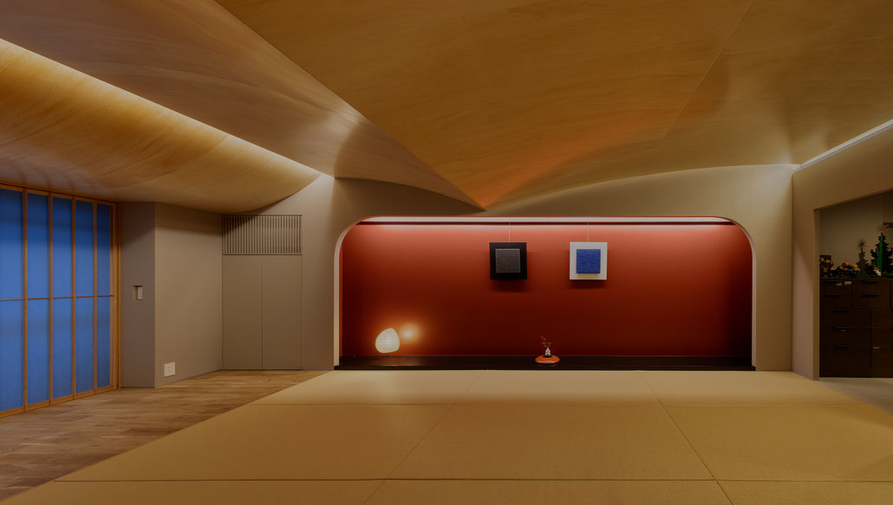
大楠の住居
マンションリノベーション ／ 福岡県福岡市
築52年を迎えるマンション一室のリノベーションである。
２DKの住戸を施主の要望であった和を基調とする一室空間に変換し、生活機能を玄関付近にコンパクトに集約しながら、住まい全体を回遊できる動線を確保した。
多くの友人が訪れることもあり、壁で空間を細かく区切らず、生活における出来事を水平方向に展開できる自由度の高い一室空間を目指した。
畳による床座を基本とする暮らしで長い時間を過ごす住まい手にとって、天井高は空間心理に大きく作用することが想定される。
そこで、立位・座位・椅子座といった姿勢によって変化する天井までの距離及び生活場面における視線の高さの推移を計画のテーマに設定し、空間スケールの調整を丁寧に行った。
天井高さは最高2350mmから最低1780mmのあいだを揺れ動き、平均天井高2100mmを確保しながら、柔らかな曲線で抑揚を与え一体的に生活を包み込む形状とした。
シナ合板を曲面で仕上げ、光沢のある塗装を施し、間接照明の反射光のみで照度を得る柔らかな光環境をつくり出している。
一室空間のなかで天井高の変化が場の境界を暗示し、自然な切り替えを生む。
その境界によって、住空間を明確に分断していくのではなく、生活領域を緩やかに重ねながら、生活が水平方向に連続して展開される。
窓の正面には大きな病院が建つため、外の風景を直接取り込むのではなく、障子によって光の移ろいだけを室内に受け入れることとした。
障子越しに差し込む外光が曲面天井に反射し、時間の流れを光の表情として室内に映し出す。
外部と内部、時間と光が静かに重なり合うような心地よい住まいを目指した。
- 敷地
- 福岡県福岡市
- 構造
- 鉄筋コンクリート造
- 種別
- 改修
- 用途
- 住宅
- 設計
- 角建築研究室
- 施工
- (株)イクスワークス
- 竣工
- 2025.3
- 写真
- Kouji Okamoto / Techni Staff
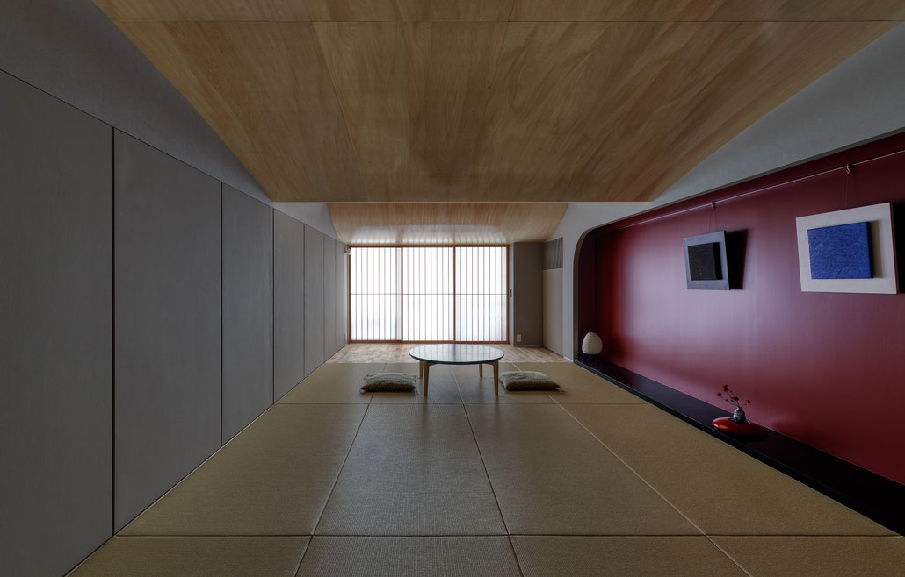
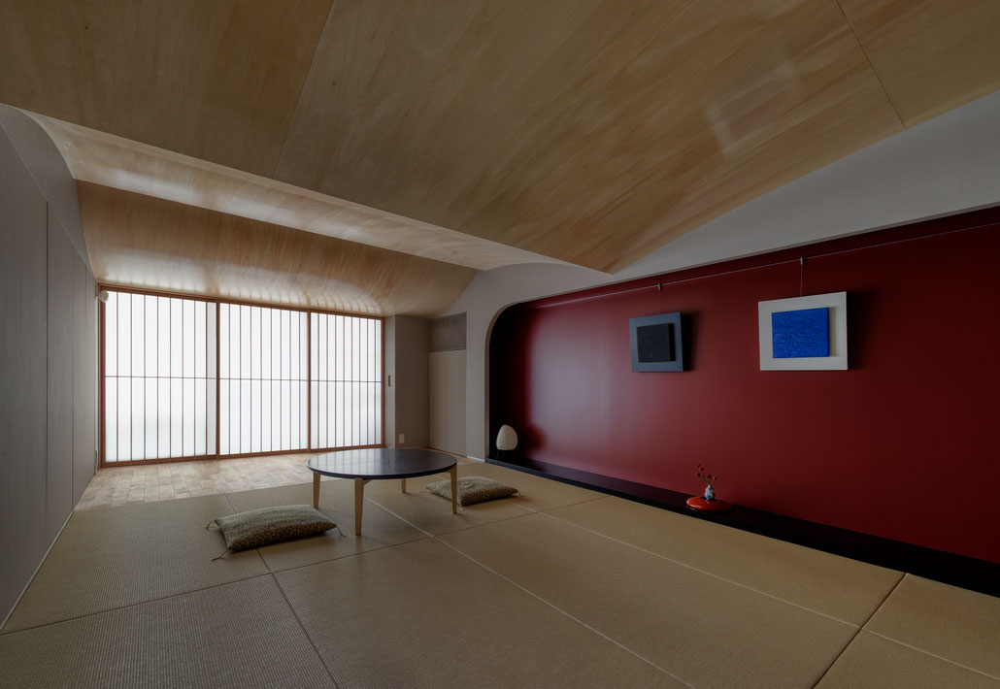
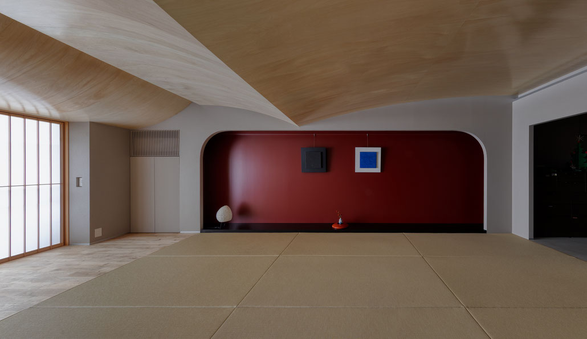
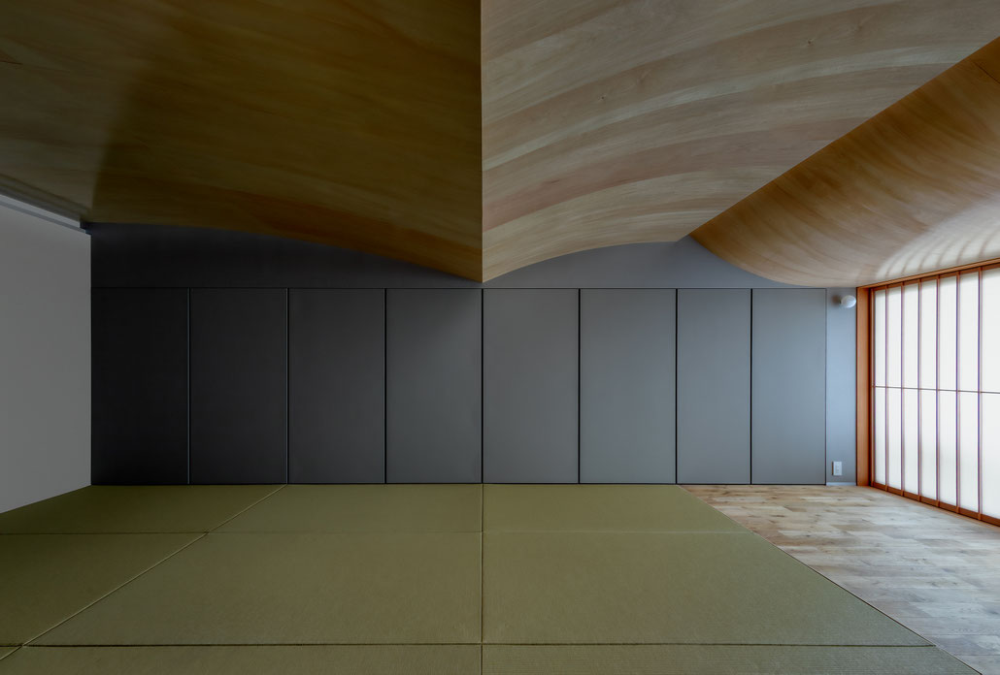
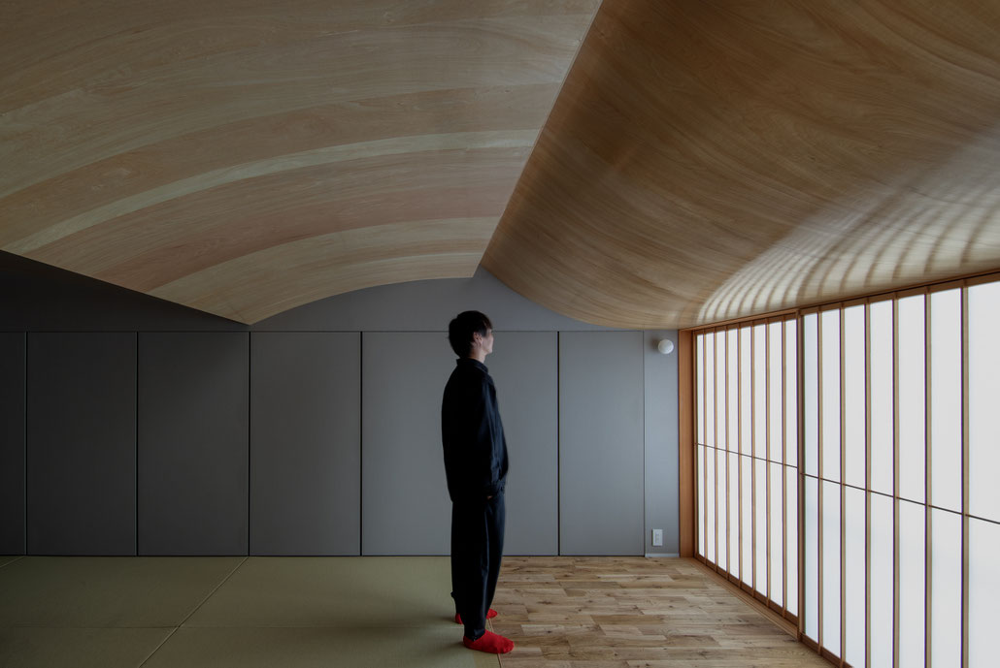
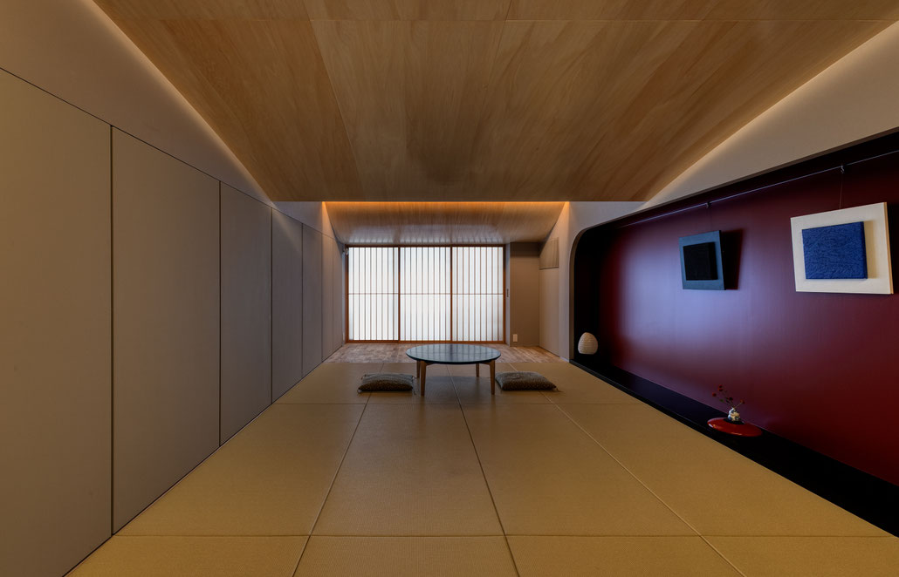
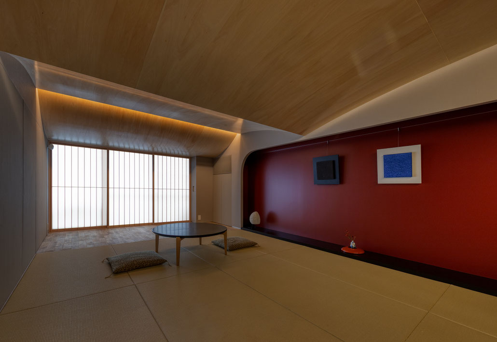
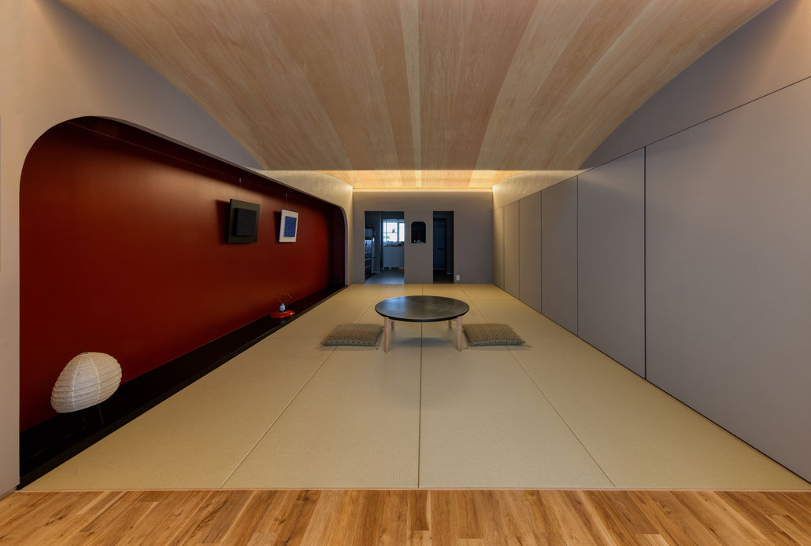
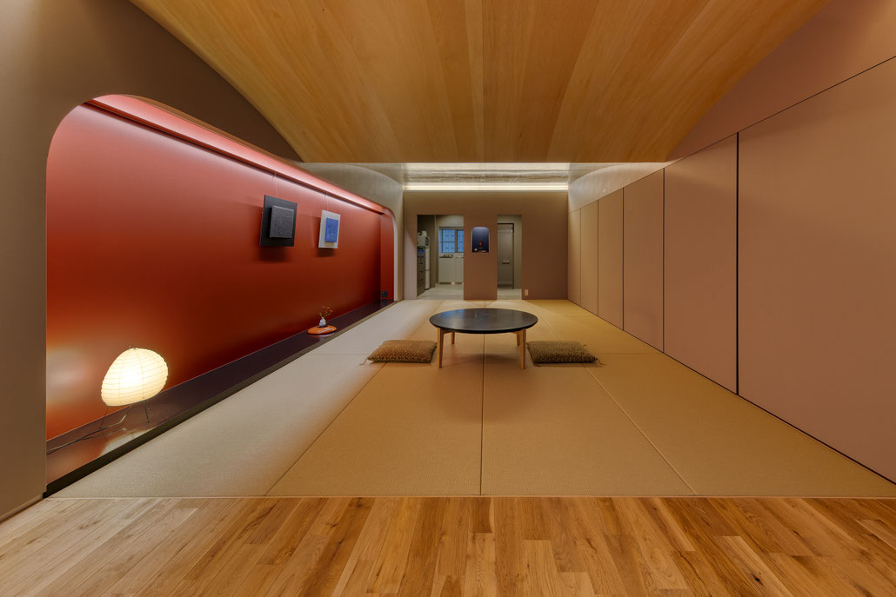
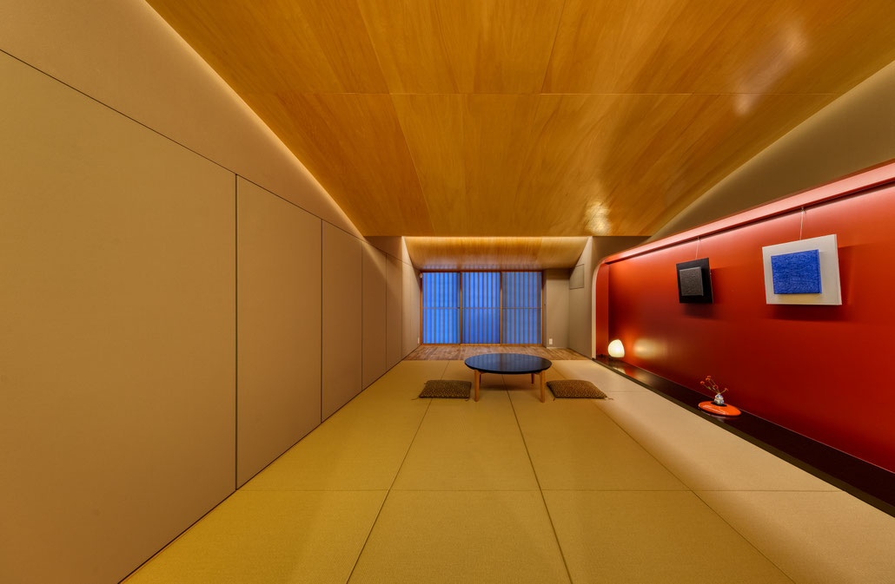
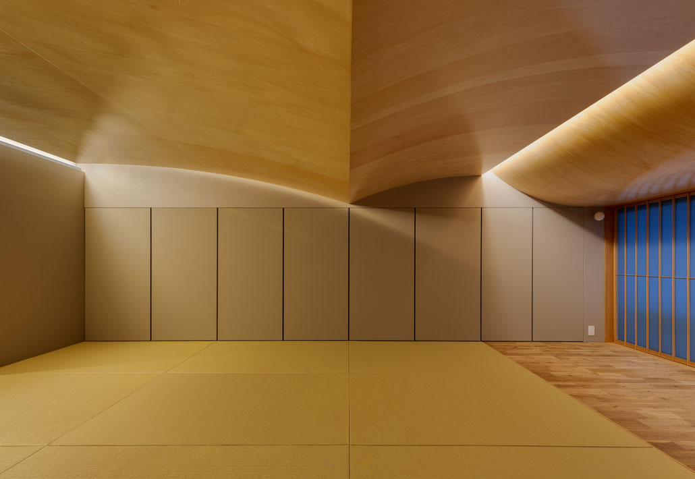
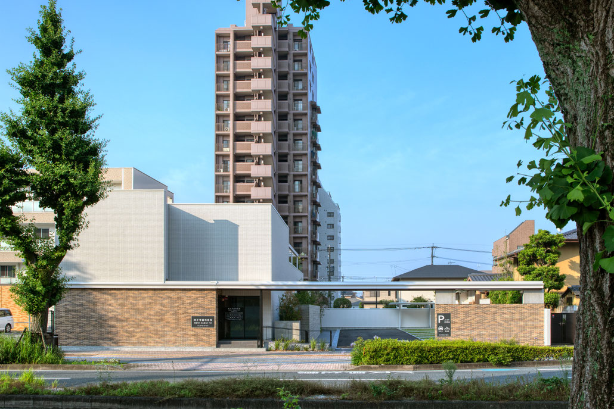